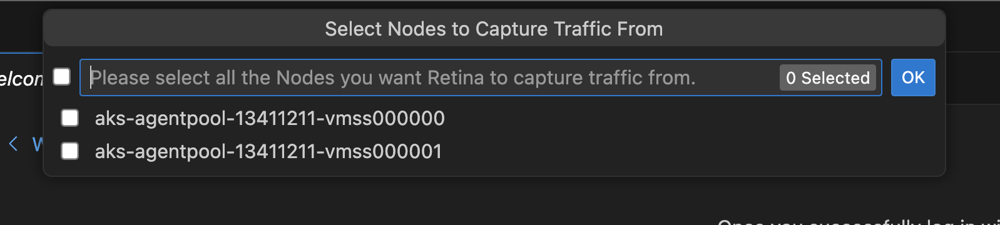
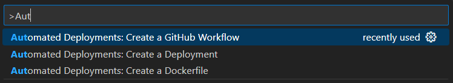

Visual Studio Code AKS Tools
Introduction
Azure Kubernetes Service (AKS) Extension for Visual Studio Code helps enable AKS developers with one-click quick to deploy features with in vscode eco-system.
Features
- Add AKS clusters to kubeconfig
- Perform AKS Diagnostics checks on your AKS cluster
- Run AKS Periscope within VS Code
- Install Azure Service Operator on your AKS cluster
- Create GitHub Workflow from your AKS cluster (deprecated)
- Show AKS cluster overview in Azure Portal
- Show AKS cluster properties
- Create AKS cluster from Azure Portal
- Stop and Start the AKS cluster
- Run Kubectl Commands from your AKS cluster
- Run Managed Cluster Operations from your AKS cluster
- Run Kubernetes API Health Endpoints
- Run Inspektor Gadget Commands
- Collect TCP Dumps
- Compare AKS Cluster
- Run Image Cleaner Eraser Tool
- Run Retina Capture
- Run Automated Deployments Commands
- Install & Deploy KAITO Models
Development and Release
Installation
-
Download and install the Azure Kubernetes Service extension for Visual Studio Code.
-
Wait for the extension to finish installing then reload Visual Studio Code when prompted.
-
Once the installation is complete, you’ll see a section named Azure under Clouds.
-
Sign in to your Azure Account by clicking Sign in to Azure…, (Afternatively, user can use
ctrl + shift + porcmd + shift + pand chooseAKS: Sign in to Azure) screenshot below could guide the switch for account as well. If your account has access to more than one Azure tenant, you will be prompted to pick one. To change the selected tenant later, you can runAKS: Select tenant...from the command palettectrl + shift + porcmd + shift + p.


Development
Package Scripts
This gives an overview of the npm scripts available for development and release of the extension. See the scripts block in package.json.
These can all be run from the command line in the root of the repository (with npm installed), using npm run {script-name}.
Environment Initialization
install:all: Installsnpmdependencies for both the main extension project and thewebview-uisub-project. It’s recommended to use this instead ofnpm install, which will only install dependencies for the main project.
Development and Testing
dev-webview: for concurrent development/debugging of webview UX.build-webview: bundles and minifies the webview UX for consumption by the extension.webpack: builds and packages the extension.test: runs automated tests.
Not for Running Directly
Some scripts are invoked by other scripts or tools, so need not be run directly, or are otherwise not required for general development tasks:
vscode:prepublish: used by thevscecommand for packaging the extension into avsixfile for distribution.webpack-dev: bundles the extension code in development mode. Since we currently have no conditional logic that depends on whether the extension is running in development or production, this may be redundant.test-compile: compiles the extension typescript (after building thewebview-uiproject) without webpacking it. This is a prerequisite to running automated tests. It could be moved intotest, but keeping it separate would allow it to be used in the future as a prelaunch task for debugging the extension without webpacking it.watch: not currently used as part of any workflow I’m aware of, but could potentially be useful for editing while debugging.
Webview Development
For commands that require a webview (see guidance on where this is appropriate), the webview-ui project provides the necessary tooling to develop the front end.
Initial Setup
Run npm run install:all to install package dependencies for both the extension and webview project.
Development/Debugging
File structure
- Webview source files are under
/webview-ui/src. - When built, bundled/minified webview assets are output to
/webview-ui/dist.
When the extension is run (both in development and production), the webview assets are read from /webview-ui/dist.
Developing the UI
If you like to use your browser development tools for debugging, or you wish to open the web application in an existing browser window:
- Run
npm run dev:webviewto start the development server. - Navigate to
http://localhost:3000in your browser.
Alternatively, if you are developing in VS Code and wish to use the inbuilt debugging functionality:
- Hit
F5to launch theWebview UIdebug profile in a new browser window. This will automatically run the development server and attach a debugger.
Developing the VS Code commands that launch the UI
To debug the extension itself, hit F5 to launch the Extension debug profile in a new VS Code Window. This will automatically build, bundle and minify both the webview-ui project and the extension.
The extension will not automatically update itself in response to code changes as you are debugging, so the best workflow here is to stop debugging, make changes, and launch the debugger again.
Building for release
The process for this is unaffected by the webview setup. The npm run webpack and vsce package commands will ensure the webpack-ui project is built and bundled.
Features
Once you successfully log in with your Azure Account, you can view all AKS clusters in your Azure subscriptions(s) under the section named Azure. You can right click on your AKS cluster and click a menu item to perform following actions.


Merge and Save Into Kubeconfig
Merge into Kubeconfig
Right click on your AKS cluster and click on Merge into Kubeconfig to add the selected AKS cluster to the kubeconfig file.
Save Kubeconfig
Right click on your AKS cluster and click on Save Kubeconfig to save the kubeconfig of the selected AKS cluster.
AKS Diagnostics
AKS Diagnostics
Right click on your AKS cluster and click on Run AKS Diagnostics to display diagnostics information based on your AKS cluster’s backend telemetry for:
- Best Practices
- Create, Upgrade, Delete and Scale issues
- Identity and Security
- Known Issues, Availability and Performance
- Network and Connectivity issues
- Node Health
To perform further checks on your AKS cluster to troubleshoot and get recommended solutions, click on the AKS Diagnostics link at the top of the page to open it for the selected cluster. For more information on AKS Diagnostics, visit AKS Diagnostics Overview.

AKS Periscope
AKS Periscope
Right click on your AKS cluster and click on Run AKS Periscope to collect node and pod logs for your AKS cluster and to export them to an Azure storage account. Upon selecting the option, a web view will load providing you the option to generate a downloadable link for the collected logs as well as a shareable link with 7-day expiry.
If you are not seeing the logs for all the nodes, it is possible the logs were still uploading. Try clicking the Generate Link button again to load more logs.
For more information, visit AKS Periscope.

Configuring Storage Account
Running the AKS Periscope requires you to have a storage account associated with the Diagnostic settings of your AKS cluster. If you have only one storage account associated with the Diagnostic settings of your AKS cluster, the collected logs will be stored in the associated storage account by default. If you have more than one storage account associated with the Diagnostics settings of your AKS cluster, then the extension will prompt you to choose the storage account for saving collected logs. If you don’t have a storage account configured in the Diagnostic settings, please follow these instructions to enable it.
-
Navigate to your AKS cluster in the Azure Portal.
-
Click on Diagnostic Settings under Monitoring in the left navigation.
-
Click on Add diagnostic setting.
-
Enter a name, such as myAKSClusterLogs, then select the option to Archive to a storage account.
-
Select a storage account of your choice.
-
In the list of available logs, select the logs you wish to enable.
Note: The incurred cost is subject to your storage account usage and Azure Storage Policy.
-
When ready, select Save to enable collection of the selected logs.
For more information on Diagnostics settings, visit Create diagnostic settings to send platform logs and metics to different destinations.
Install Azure Service Operator
Install Azure Service Operator
Right click on your AKS cluster and click on Install Azure Service Operator to easily deploy the latest version of Azure Service Operator (ASO) on your AKS cluster and provision and connect applications to Azure resources within Kubernetes. When you select this option, you’ll be prompted for a service principal for ASO to use when performing Azure resource operations. This service principal must have appropriate permissions (typically Contributor at suitable scope). Fill out the service principal details and click Submit to kick off the installation of Azure Service Operator.
Install Azure Service Operator can only be performed on an AKS cluster that has never had ASO installed before. If you have already initiated the installation manually, follow the instructions on Azure Service Operator to complete.
For more information on Azure Service Operator, visit Azure Service Operator (for Kubernetes). If you are experiencing issues with Azure Service Operator, visit Azure Service Operator (ASO) troubleshooting.
Create GitHub Workflow
Deprecation note
This command has been superseded by the Draft Workflow command.
Create GitHub Workflow
Right click on your AKS cluster and click on Create GitHub Workflow to easily open and create a workflow starter template. This helps in quick generation of the workflow templates with pre populates resource and clustername for:
Show Properties, Show in Azure Portal
Show in Azure Portal
Right click on your AKS cluster and click on Show in Azure Portal to easily navigate to AKS cluster overview page in Azure Portal.
Show Properties
Right click on your AKS cluster and click on Show Properties to display the AKS cluster and agent pool properties like provisioning state, fqdn, k8s version, along with node properties like node version, vm type, vm size, o/s type, o/s disk size and nodes provisioning state.
This page also enables some useful cluster and node pool level operations like Abort Last Operation (at cluster and agent pool level) and Reconcile.
This page now also enable information box for the users to quickly see available kuberentes versions available for the cluster to upgrade and if the current version is out of support or not.

Create cluster from Azure Portal
Right click on your AKS sunscription and click on Create cluster from Azure Portal to easily navigate to AKS create cluster page in Azure Portal.
Create cluster
Right click on your AKS subscription and click on Create Cluster and select Create Standard Cluster which will start a 2-step wizard for you to enter a valid cluster name and select an existing resource group. The VS Code experience will then notify user with the deployment progress and present you with the Navigate to Portal link when it completes successfully.


Start or Stop AKS cluster
Right click on your AKS cluster and click on Show Properties to display the AKS cluster properties, within the page there will be Stop/Start Cluster button to perform the start or stop the cluster operation.
Show Properties, Show in Azure Portal
Show in Azure Portal
Right click on your AKS cluster and click on Show in Azure Portal to easily navigate to AKS cluster overview page in Azure Portal.
Show Properties
Right click on your AKS cluster and click on Show Properties to display the AKS cluster and agent pool properties like provisioning state, fqdn, k8s version, along with node properties like node version, vm type, vm size, o/s type, o/s disk size and nodes provisioning state.
This page also enables some useful cluster and node pool level operations like Abort Last Operation (at cluster and agent pool level) and Reconcile.
This page now also enable information box for the users to quickly see available kuberentes versions available for the cluster to upgrade and if the current version is out of support or not.
Create cluster from Azure Portal
Right click on your AKS sunscription and click on Create cluster from Azure Portal to easily navigate to AKS create cluster page in Azure Portal.
Create cluster
Right click on your AKS subscription and click on Create Cluster and select Create Standard Cluster which will start a 2-step wizard for you to enter a valid cluster name and select an existing resource group. The VS Code experience will then notify user with the deployment progress and present you with the Navigate to Portal link when it completes successfully.
Start or Stop AKS cluster
Right click on your AKS cluster and click on Show Properties to display the AKS cluster properties, within the page there will be Stop/Start Cluster button to perform the start or stop the cluster operation.
Show Properties, Show in Azure Portal
Show in Azure Portal
Right click on your AKS cluster and click on Show in Azure Portal to easily navigate to AKS cluster overview page in Azure Portal.
Show Properties
Right click on your AKS cluster and click on Show Properties to display the AKS cluster and agent pool properties like provisioning state, fqdn, k8s version, along with node properties like node version, vm type, vm size, o/s type, o/s disk size and nodes provisioning state.
This page also enables some useful cluster and node pool level operations like Abort Last Operation (at cluster and agent pool level) and Reconcile.
This page now also enable information box for the users to quickly see available kuberentes versions available for the cluster to upgrade and if the current version is out of support or not.
Create cluster from Azure Portal
Right click on your AKS sunscription and click on Create cluster from Azure Portal to easily navigate to AKS create cluster page in Azure Portal.
Create cluster
Right click on your AKS subscription and click on Create Cluster and select Create Standard Cluster which will start a 2-step wizard for you to enter a valid cluster name and select an existing resource group. The VS Code experience will then notify user with the deployment progress and present you with the Navigate to Portal link when it completes successfully.
Start or Stop AKS cluster
Right click on your AKS cluster and click on Show Properties to display the AKS cluster properties, within the page there will be Stop/Start Cluster button to perform the start or stop the cluster operation.
Show Properties, Show in Azure Portal
Show in Azure Portal
Right click on your AKS cluster and click on Show in Azure Portal to easily navigate to AKS cluster overview page in Azure Portal.
Show Properties
Right click on your AKS cluster and click on Show Properties to display the AKS cluster and agent pool properties like provisioning state, fqdn, k8s version, along with node properties like node version, vm type, vm size, o/s type, o/s disk size and nodes provisioning state.
This page also enables some useful cluster and node pool level operations like Abort Last Operation (at cluster and agent pool level) and Reconcile.
This page now also enable information box for the users to quickly see available kuberentes versions available for the cluster to upgrade and if the current version is out of support or not.
Create cluster from Azure Portal
Right click on your AKS sunscription and click on Create cluster from Azure Portal to easily navigate to AKS create cluster page in Azure Portal.
Create cluster
Right click on your AKS subscription and click on Create Cluster and select Create Standard Cluster which will start a 2-step wizard for you to enter a valid cluster name and select an existing resource group. The VS Code experience will then notify user with the deployment progress and present you with the Navigate to Portal link when it completes successfully.
Start or Stop AKS cluster
Right click on your AKS cluster and click on Show Properties to display the AKS cluster properties, within the page there will be Stop/Start Cluster button to perform the start or stop the cluster operation.
Run Kubectl Commands
Run Kubectl Commands from your AKS cluster
Right click on your AKS cluster and click on Run Kubectl Commands to easily run few known kubectl commands on your cluster. Currently we have enable following kubectl commands for the AKS cluster:
- Describe Services
- Get All Pods
- API Resources
- Get Cluster Info
- Get Node
- Get All Events
User can also run custom commands by typing or editing kubectl command parameters in the text field. Custom commands can optionally be saved for future use..
Run Managed Cluster Operations
Run Managed Cluster Operations from your AKS cluster
Right click on your AKS cluster and click on Managed Cluster Operations to easily run few managed cluster operations on your cluster. Currently we have enable following operations:
- Abort Last Operation
- Delete Cluster
- Reconcile Cluster
- Rotate Cluster Certificate
Kubernetes API Health Endpoints
Run Kubernetes API Health Endpoints
Right click on your AKS cluster and click on Run Kubectl Commands. Select and run health check commands from the Health section as shown in the image below. Currently we provide:
- Healthz
- Livez
- Readyz
Inspektor Gadget
Deploy and Undeploy InspektorGadget
Right click on your AKS cluster and select Troubleshoot Network Health and then click on Show Inspektor Gadget to easily deploy gadget into your cluster. User can easily one-click deploy and undeploy gadget from this feature.
Profile, Top, Trace and Snapshot Inspektor Gadget Commands
Right-click on your AKS cluster and select Show Inspektor Gadget and choose Gadget Commands to easily use non-interactive Top, Trace, Profile or Snapshot commands for your cluster.

Inspektor Gadget
Deploy and Undeploy InspektorGadget
Right click on your AKS cluster and select Troubleshoot Network Health and then click on Show Inspektor Gadget to easily deploy gadget into your cluster. User can easily one-click deploy and undeploy gadget from this feature.
Profile, Top, Trace and Snapshot Inspektor Gadget Commands
Right-click on your AKS cluster and select Show Inspektor Gadget and choose Gadget Commands to easily use non-interactive Top, Trace, Profile or Snapshot commands for your cluster.
Collect TCP Dumps from AKS Cluster Linux Nodes
Collect TCP Dumps
Right click on your AKS cluster and select Troubleshoot Network Health and then select Collect TCP Dumps to capture TCP dumps for any Linux node and download them to your local machine with ease.
Added filters to the TCP Dump functionality, so that you can target traffic capture to specific network interfaces, ports or protocols, to or from specific pods, or craft custom pcap filter strings.
Compare 2 AKS Cluster within Same Subscription
Compare AKS Clusters
Right click on your AKS cluster and select Compare AKS Cluster to use vscode diff to compare json object of 2 AKS clusters.


Garbage collection Using Eraser Image Cleanup Tool
Run Eraser Image Cleanup
Right click on your AKS cluster and select Run Eraser Image Cleanup to deploy the Eraser Tool to auomatically clean images in a regular interval for the selected AKS Cluster.


Run Retina Distributed Capture from AKS Cluster Linux Nodes
Run Retina Capture
Right click on your AKS cluster and select Troubleshoot Network Health and then click on Run Retina Capture to capture logs like iptables-rules, ip-resrouces.txt and other key distributed captures form this azure networking tool for any Linux node and download them to your local machine with ease.


Automated Deployments: Draft Tool Integration
The Automated Deployments commands integrate the Draft tool to provide:
- Draft Dockerfile
- Draft Deployment
- Draft Workflow
These can be launched from either:
- The command palette. (To open: Hold
Ctrl(⌘ Cmdon macOS) +shift+p)
This will allow user to have access to a complete power of Draft tool and allow users to take advantage for scaffolding geenration for their projects.



AKS Plugins for GitHub Copilot for Azure
Overview
The AKS plugins (or skills) for GitHub Copilot for Azure (@azure) extension enable users to perform various tasks related to Azure Kubernetes Service (AKS) directly from the GitHub Copilot Chat view. These skills include creating an AKS cluster, deploying a manifest to an AKS cluster, and generating Kubectl commands.
Features
Create an AKS Cluster
Users can quickly set up an AKS cluster using simple, natural language prompts. This reduces the complexity and time required to manually configure and deploy a Kubernetes cluster.

You can create an AKS cluster using the following prompts:
- [@azure] can you help me create a Kubernetes cluster
- [@azure] can you set up an AKS cluster for me?
- [@azure] I have a containerized application, can you help me create an AKS cluster to host it?
- [@azure] create AKS cluster
- [@azure] Help me create a Kubernetes cluster to host my application
Deploy a Manifest to an AKS Cluster
Users can deploy their application manifests to an AKS cluster directly from the GitHub Copilot Chat view. This simplifies the deployment process and ensures consistency. By using predefined prompts, the risk of errors during deployment is minimized, leading to more reliable and stable deployments.

To deploy a manifest file to an AKS cluster you can use these prompts:
- [@azure] help me deploy my manifest file
- [@azure] can you deploy my manifest to my AKS cluster?
- [@azure] can you deploy my manifest to my Kubernetes cluster?
- [@azure] deploy my application manifest to an AKS cluster
- [@azure] deploy manifest for AKS cluster
Generate Kubectl Command
Users can generate various Kubectl commands to manage their AKS clusters without needing to remember complex command syntax. This makes cluster management more accessible, especially for those who may not be Kubernetes experts. Quickly generating the necessary commands helps users perform cluster operations more efficiently, saving time and effort.

You can generate various Kubectl commands for your AKS cluster using these prompts:
- [@azure] list all services for my AKS cluster
- [@azure] kubectl command to get deployments with at least 2 replicas in AKS cluster
- [@azure] get me all services in my AKS cluster with external IPs
- [@azure] what is the kubectl command to get pod info for my AKS cluster?
- [@azure] Can you get kubectl command for getting all API resources
Overall, these features enhance the user experience by making it easier to manage AKS clusters, deploy applications, and execute commands, all from within the GitHub Copilot Chat view. This integration promotes a more seamless and productive workflow for DevOps engineers and developers
Install and deploy KAITO models
The KAITO integration allows you to
- Install KAITO to a cluster
- Deploy KAITO models
Install KAITO
Right click on your AKS cluster and select Deploy an LLM with KAITO and then click on Install KAITO to open up the KAITO installation page.

Once on the page, click Install and the Kaito installation progress will begin. You will be notified when Kaito has been successfully installed.
Deploy a model
Right click on an AKS cluster that has KAITO installed and select Deploy an LLM with KAITO and then click on Create KAITO Workspace to open the KAITO model deployment page.

Once on this page, you can click any of the models to open up the side panel, which will present you with the option to either Deploy Default workspace CRD or Customize Workspace CRD.
Click Deploy Default workspace CRD to deploy the model. It will track the progress of the model and notify you once the model has been successfully deployed. It will also notify you if the model was already previously unsucessfully onto your cluster.
Click Customize Workspace CRD to open up a CRD file pre-populated with the infromation necessary to deploy the model. You can alter this file to your desires and save it locally.
Release
How to Release
To make a new release and publish it to the marketplace you have to follow the following steps.
- Create a branch
publish-x.y.z - Update
package.jsonwith the new version - Add a section to
CHANGELOG.mdwith the header## [x.y.z](N.B: make sure to write the new version in square brackets as thechangelog-readeraction only works if theCHANGELOG.mdfile follows the Keep a Changelog standard) - Create a new PR, get approval and merge
- Run the
Build & Publishworkflow manually from the GH Actions tab
Build & Publish
The Build & Publish workflow allows to create a new release, package it in a VSIX file and publish to the VSCode marketplace with a single click.
The only requirement needed to run the workflow is to have a secret named VS_MARKETPLACE_TOKEN containing the Personal Access Token of the publisher. You can find more infos about how to create a publisher/token in the official documentation
Once everything is set up and you followed all first 4 steps in the previous section, you are ready to trigger the Build & Publish workflow.
This is what it actually does:
- Install all dependencies and build the project
- Check if the
CHANGELOG.mdcontains a section related to the new version - Create a new release
- Create the VSIX file and publish it to the marketplace
- Attach the VSIX file to the new release
Contributing
Contributing
This project welcomes contributions and suggestions. Most contributions require you to agree to a Contributor License Agreement (CLA) declaring that you have the right to, and actually do, grant us the rights to use your contribution. For details, visit https://cla.microsoft.com.
When you submit a pull request, a CLA-bot will automatically determine whether you need to provide a CLA and decorate the PR appropriately (e.g., label, comment). Simply follow the instructions provided by the bot. You will only need to do this once across all repos using our CLA.
This project has adopted the Microsoft Open Source Code of Conduct. For more information see the Code of Conduct FAQ or contact opencode@microsoft.com with any additional questions or comments.
Telemetry
Telemetry
This extension collects telemetry data to help us build a better experience for building applications with Azure Kubernetes Service and VS Code. We only collect the following data:
- Which commands are executed.
- Events pertaining to GitHub Copilot for Azure (@azure) handlers
- Which VS Code command ID was used to enable handler
- Whether or not if a subscription was selected
- Whether or not a manifest file was selected
- Whether or not a cluster was selected
- Which cluster option was selected (see
SelectClusterOptionstype) - Whether or not a manifest deployment was cancelled
- Whether or not a manifest deployment was successful
- Whether or not the success manifest deployment link was clicked
- Whether or not a cluster was successfully created
We do not collect any information about image names, paths, etc. Read our privacy statement to learn more. If you don’t wish to send usage data to Microsoft, you can set the telemetry.enableTelemetry setting to false. Learn more in our FAQ.